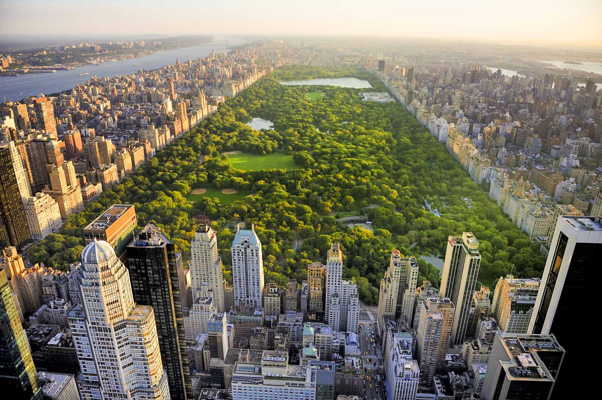
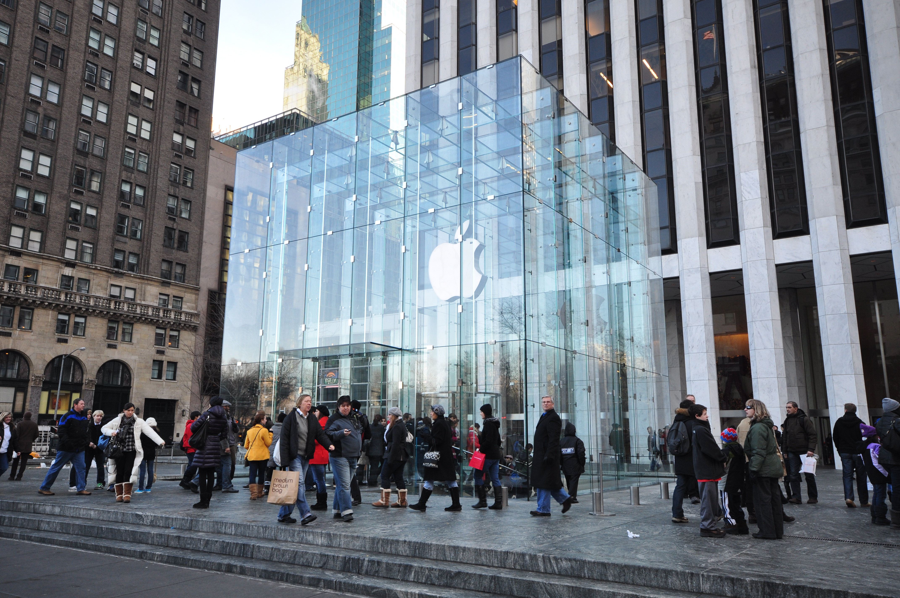
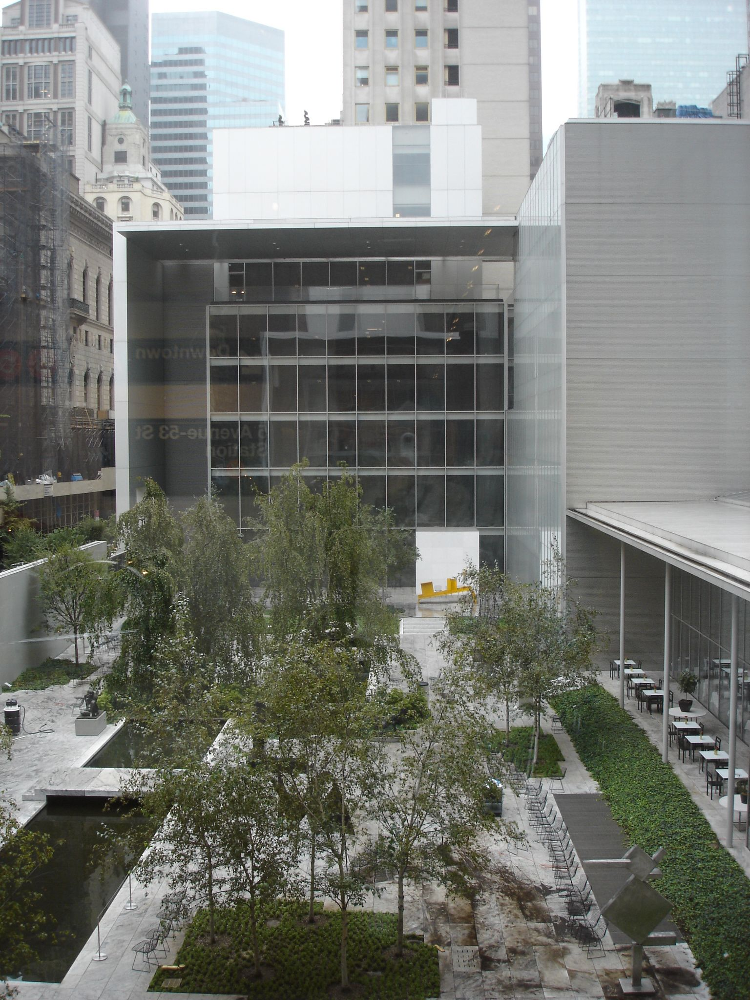
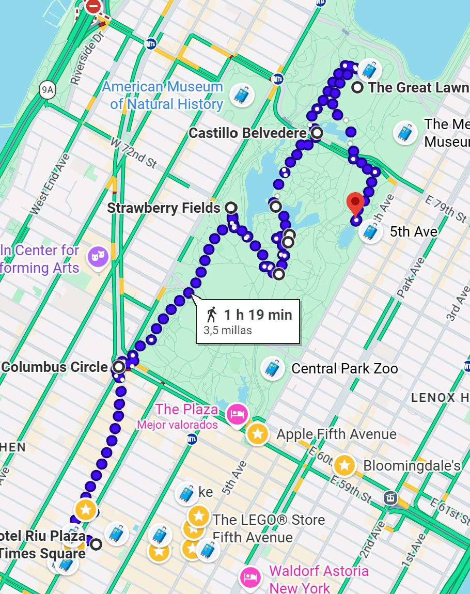

📅 Horario del día
Visita / Monumento
Comer / Beber
Desplazamiento
06:30 – 07:30
🏃 Posibilidad salir a correr
Opcional: salida matutina a correr antes del tour. Hay 1 km hasta Central Park.
07:30 – 08:30
☕ Desayuno
Deli, 7 Eleven o Matto Espresso — cafés express cerca del hotel.
08:30 – 09:00
🚶🏻♂️➡️ Desayuno → Central Park
Ir a Central Park.
09:00 – 11:30
🌳 Central Park + Zoo (3h)
Entrar por Columbus Circle - Pasear por The Mall & Literary Walk - Llegar a Bethesda Terrace y Bethesda Fountain - Cruzar el Bow Bridge - Ir hasta la estatua de Alicia en el País de las Maravillas - Pasar por Belvedere Castle - Ver la Great Lawn - Bajar hacia Strawberry Fields (Imagine) - Zoo central park - Salir del parque por la zona de Grand Army Plaza / Fifth Avenue. El orden está en la ruta.
11:30 – 12:00
🍎 Tienda Apple (si no dio tiempo el día 5)
La icónica tienda Apple de la 5ª Avenida. Si no se pudo el día 5, hoy es el momento.
12:00 – 13:00
🎡 Tiendas Times Square. Depende de cuántas nos queden
Depende del tiempo y energía: tiendas en Times Square o el teleférico a Roosevelt Island (vistas únicas y muy tranquilo).
13:00 – 14:30
🍽 Comer
Última comida en Nueva York. ¡Que sea memorable!
14:30 – 18:00
🛍 Macy's — llevará mucho tiempo. MoMa. Cosas que falten
La tienda más grande del mundo. Reservar bastante tiempo. También opción de ver el MoMa o tienda Harry Potter. También aprovechar para ver monumentos que no dio tiempo.
18:00
✈️ Bye bye NY 🥲
Vuelta al hotel, recoger maletas y camino al aeropuerto. ¡Hasta la próxima, Nueva York!
Ruta en Google Maps
🗺️ Abrir ruta 1 en Maps 🗺️ Abrir ruta 2 en Maps